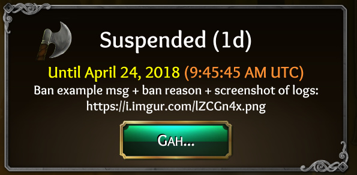

How do you moderate?
See our transparent practices here:
Warned/Suspended/Banned FAQ ( https://toli.es/banfaq )

Why was I suspended? When does the suspension lift?
Suspensions are usually not permanent, averaging 1~3 days, leading up to 30d to a year+.
Whenever you get notified you are suspended or attempt to login to see the suspension message, there will always be both a reason and expiration date within that message. Chances are you broke an in-game rule:
https://toli.es/rules (although in-game rules are the most updated)
My suspension lifts today - but what time?
Our servers are on UTC time. New suspensions should now show the time and date. Your suspension will lift at the same time (of day) you were initially suspended.
I want to see the logs!
We get 100’s of reports per day. We get the full chat logs, have tons of experience doing this, we can also view your report/suspension/warn history, etc. We even know who was the originally trollbox sender, etc. We have it all – if you were suspended, we used our best judgment using sophisticated tools. We cannot show you the logs because we’d have no time to show everyone.
We also gather the info of your reporter and their history. So if it was a troll report and they have a history of troll reporting, we’ll know. We take all of this and many other things into consideration.
I reported someone, then I got suspended/warned for it!
Nay, you didn’t get suspended/warned for reporting someone: Reports are usually a 2-way street, unless we specifically said that you were in trouble for cases of false reporting (eg, reporting due to a salty loss).
You are playing in games of 16 players – that means 15 other players can report you per-game. 99.9% chance you got reported for something else than what you reported someone else for. OR, if there was another person involved, you probably both got reported and separate cases are being handled (even if baited). If person A punched B >> then B stabbed A >> they’re both in trouble. Whoever baited/started it will likely get in more trouble, though.
If you got punished, chances are the other guy also got punished. Trust us to handle it. If you got in trouble, then that’s proof we’re handling reports (you want us to punish the other guy you reported, right? Whoever reports 1st does not get immunity). We will not disclose the result of the disciplinary action of “the other guy”, so don’t ask~
I didn’t do it!
When reported, we see logs from the entire game (more than what you see, including original trollbox writers), your match history, your report history, the accuser’s report history, name history, etc) to make a judgment call based on all these factors. If you were nasty, you got temporarily suspended.
My Roommate got Banned!
We use some pretty cutting-edge ban evasion detection systems: Since the statistical chances of your roommate sharing the same computer and IDs are incredibly rare for ages 13+ (our minimum age to play) and is most likely the original banned player, we cannot appeal ban evasion alt cases.
Banned because of a review!
This simply does not (and will never) happen. This would be purely coincidence: Your suspension popup message will tell you what you’re actually banned for and you may review it anytime by attempting to login while actively suspended.
However, trash talking, threatening the devs/community, or blatantly revenge reviewing on any website/app may result in meta-community privileges lost per our terms of service.
I’m going to sue you + trash talk the devs!
Threatening, harassing or abusing the mods/devs or any community members will result in a permanent ban of all accounts/communities. We do not take threats lightly and will not tolerate extortion for a review, ban, or anything.
I got a warning! I didn’t do anything!
Well, warnings will always show the reason for the warning - so it had to be for something! 
If it truly was a misunderstanding, don’t worry: Warnings are just for us to keep history for future reports. If it was mistaken as a newb mistake, nothing will happen.
Later, we’ll add an “info” popup that isn’t actually called a warning to give new players a heads up about our rules so it’s less intimidating. Really - warnings are just there for your info and for our reference if reported in the future! We don’t want to see people banned  So we try to warn first, for lower-level cases or possible misunderstandings.
So we try to warn first, for lower-level cases or possible misunderstandings.
…but I didn’t know!
-
There’s a giant rules button in the lobby. Please check it out.
-
Or check out our detailed in-game rules thread: https://forum.imperium42.com/t/official-in-game-rules-read-first/2673?source_topic_id=244
-
Or check out our terms of service you agreed to when using our game, sites or services: https://www.ThroneOfLies.com/legal/terms.html
-
Or ask a @guide in Discord if you can/cannot do something: https://discord.gg/tol
Can I appeal my warning?
No, sorry - it’s just a warning. See above. It doesn’t do anything unless it happens again. We spend hours per day on reports, alone. If we showed every report to every person, this time would easily double~
Can I appeal my ban?
Only in private - and only if it was truly a misunderstanding and you are respectful about it. Hop into Discord and get in contact with a mod: https://discord.gg/tol
Don’t forget, we have full access to chat history, who used what ability, game records, your detailed report history, etc. Yes, we reviewed the entire logs, already. Appealing a ban with dishonesty will result in a longer ban. Appealing a ban to multiple staff members after 1 has already made a decision will result in a longer ban. Make 1 appeal only to 1 person.
You can’t do this!
Per the Terms of Service you agreed to when you first entered the game, players can be banned for inappropriate behavior, cheating, etc. We can permaban, but we usually like to offer a chance first, unless it’s really bad. Simply, “be a decent human being and you won’t be banned”. If you are toxic when attempting to appeal, this gives us no reason to unban you (and may actually prove our point).
We don’t want to ban you. At the same time, we don’t want other players’ experiences ruined by a single person.
 memes are terrorists.
memes are terrorists.